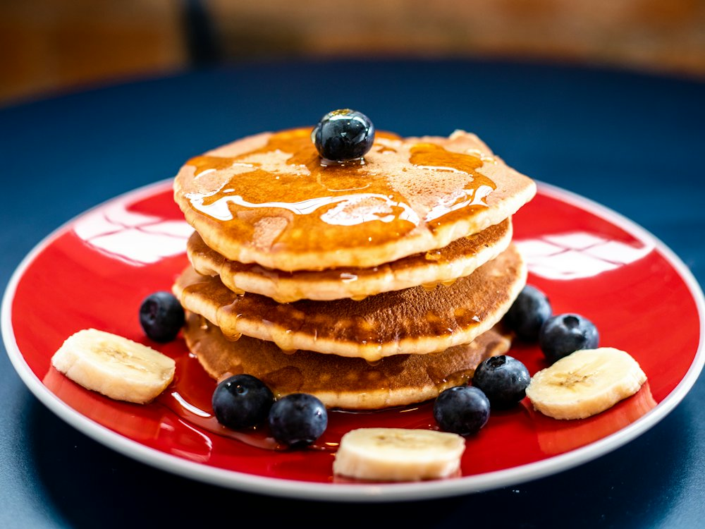

Coffee Original
Кофейня · Кофе, завтраки · Алматы
Рейтинг 2ГИС
★ 4.8
2 703 оценок
Год открытия
нет данных
в открытых источниках не нашли
Средний чек
≈4 000 ₸
оценка по типу заведения
Адрес и часы
📍 ул. Гоголя, 75, Алматы · Медеуский район
🕒 круглосуточно
О заведении
Кофейня с завтраками в центре.
Меню
Рядом в справочнике
Cicada · Cicek Мангал · Coffee BOOM · Coffeedelia · Coffeeroom · CoffeeVarka